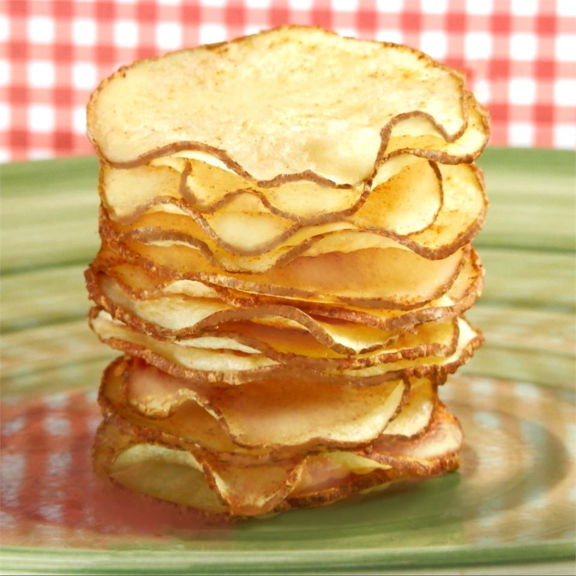

Potato Chips

Description
Make your own potato chips using your microwave. A tasty and easy alternative to store-bought potato chips (not to mention economical)! A mandoline would make slicing the potato into paper thin slices a breeze.
Ingredients
- 1 tablespoon vegetable oil
- 1 potato, sliced paper thin (peel optional)
- 1/2 teaspoon salt, or to taste
Steps
- Pour the vegetable oil into a plastic bag (a produce bag works well). Add the potato slices, and shake to coat.
- Coat a large dinner plate lightly with oil or cooking spray. Arrange potato slices in a single layer on the dish.
- Cook in the microwave for 3 to 5 minutes, or until lightly browned (if not browned, they will not become crisp). Times will vary depending on the power of your microwave. Remove chips from plate, and toss with salt (or other seasonings). Let cool.
- Repeat process with the remaining potato slices. You will not need to keep oiling the plate.
Return to homepage